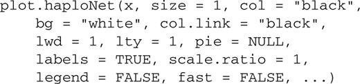

-
 PDF
PDF
- Split View
-
Views
-
CiteCitation
Emmanuel Paradis, pegas: an R package for population genetics with an integrated–modular approach, Bioinformatics, Volume 26, Issue 3, 1 February 2010, Pages 419–420, https://doi.org/10.1093/bioinformatics/btp696
Download citation file:
© 2019 Oxford University Press
Close -
Share
Abstract
Summary: pegas (Population and Evolutionary Genetics Analysis System) is a new package for the analysis of population genetic data. It is written in R and is integrated with two other existing R packages (ape and adegenet). pegas provides functions for standard population genetic methods, as well as low-level functions for developing new methods. The flexible and efficient graphical capabilities of R are used for plotting haplotype networks as well as for other functionalities. pegas emphasizes the need to further develop an integrated–modular approach for software dedicated to the analysis of population genetic data.
Availability: pegas is distributed through the Comprehensive R Archive Network (CRAN): http://cran.r-project.org/web/packages/pegas/index.html Further information may be found at: http://ape.mpl.ird.fr/pegas/
Contact:emmanuel.paradis@ird.fr
Population genetics has a strong mathematical background, and therefore genetic data analyses heavily relies on computer programs. Currently, no unified framework for these programs exists making the use of the many different population genetics programs a complicated task (Excoffier and Heckel, 2006). On the other hand, R (R Development Core Team, 2009) appeared as a unified framework for analysing data in bioinformatics (Gentleman, 2008) and phylogenetics (Paradis, 2006). In this note, I introduce pegas (Population and Evolutionary Genetics Analysis System) which aims to fill the gap between the existing R packages and the current need in population genetic data analyses.
pegas is entirely written in R to insure maximum portability among operating systems. It requires a standard R installation as well as two packages: ape (Paradis et al., 2004) and adegenet (Jombart, 2008). These three packages make an integrated environment for population genetic data analysis.
One of the strengths of R is the flexibility of its data structures, so that it is easy to adapt them for a particular field, resulting in much easier data input/output and manipulation (one of the most time-consuming step in data analysis). Two such structures have been derived for pegas. The main one is the class ‘loci’ which is a simple data frame where the rows are individuals and the columns are loci and optional variables. The latter may be of any kind (continuous, integer, logical, etc.). Loci are coded with R factors (i.e. categorical variables) which are vectors of integers. Since computing on integers is fast, counting genotypic frequencies can be done efficiently. The convention is to code a genotype with the alleles separated with a forward slash, so that once genotypes are counted, allelic frequencies are easily obtained by counting the number of alleles in each genotype. Consequently, any level of ploidy may be handled. Since most operations on allelic data require counting allele and genotype frequencies, this operation has been optimized in the function summary.loci which is used by other functions in pegas.
The class ‘loci’ inherits the class ‘data.frame’ (a standard class in R) so all functionalities available for the latter (manipulation, subsetting, etc.) can be used for the former (Chambers, 2008). The typical example is in the use of the indexing operator [, ]. A special version of this operator has been written for the class ‘loci’ so that the loci columns are correctly identified even after deletion of some rows and/or columns. Another advantage of the data frame structure is that each row is identified by a unique label (the rownames) so that these data may easily be matched with other data that have similar labels (e.g. a distance matrix, a DNA sequence alignment or a genealogy).
R has many tools to analyse data frames and these may be used directly for the class ‘loci’ and functions in pegas. A common task in population genetics is to perform some analyses for different subsets of the data (populations, breeds, plots, etc.). For instance, if a data set x has a variable population, the R function by may be used to compute some statistics for each level of this variable, e.g. by(x, x$population, hw.test) to perform Hardy–Weinberg test. The second argument may be a list of variables in which case the analyses will be done for each combination of them, e.g. by(x, list(x$plot, x$treatment), summary) will compute allele and genotype frequencies for every combination of plot and treatment.
The second main special data structure of pegas is the class ‘haplotype’ which inherits the class ‘DNAbin’ of ape. In addition to the set of unique DNA sequences, this class includes a vector of indices identifying the individuals belonging to each haplotype. This makes possible to link a set of haplotypes with individual data (phenotypes, geographic locations, etc.).
Missing data are coded explicitly in pegas. In the class ‘loci’, the standard NA is used and these are handled in the R standard way. In the class ‘haplotype’, the IUPAC code for ambiguous nucleotides is used and this is taken into account during calculations.
The current version of pegas includes standard tools for population genetic analyses: genotypic and allelic frequencies, Hardy–Weinberg equilibrium, FST, analysis of molecular variance, haplotype network, mismatch distribution, Tajima's D and R2 tests for population stability, nucleotide diversity (π), the population parameter θ (=4Neν), the site frequency spectrum, as well as several functions for reading and writing data files. pegas has also several low-level functions for manipulating its data structures (extracting observed alleled and genotypes, their frequencies, ploidy levels, building tables of all possible genotypes), making possible to extend its functionalities in a straightforward way. pegas includes basic tools for the coalescent such a computing likelihoods for a given tree, and estimating θ by maximum likelihood. All functions are accompanied with a help page describing how the calculations are done and giving the relevant literature references. These pages are compiled in a reference manual in PDF available from the above web site.
There are already a large number of computer programs for handling genetic data, so it is crucial for R users to be able to analyse the data files from the most widely used ones. pegas provides a function read.loci to read allelic data in tabular form from a text file. This function has several options to specify the loci and allele separator as well as which columns should be considered as loci or as additional variables. pegas has several functions to convert the data structures from adegenet (class ‘genind’) to the class ‘loci’. Since adegenet has functions to read files created for the programs STRUCTURE, FSTAT, GENETIX and GENEPOP (read.structure, read.fstat, read.genetix, read.genepop), these file formats may also be readily used into pegas as well. Once read into R, and possibly converted into the class ‘loci’, data can be edited by hand with the R spreadsheet data editor (Fig. 1). pegas is distributed with a tutorial explaining, step-by-step, how to input data from different file formats (in R type vignette(‘ReadingFiles’)).
The R data editor showing microsatellite data. Note the first column allowing to edit the individual (row) labels.
The R data editor showing microsatellite data. Note the first column allowing to edit the individual (row) labels.
pegas uses the efficient and flexible graphical capabilities of R (Murrell, 2006). For instance, the options for plotting a haplotype network (Templeton et al., 1992) are:

These options make possible to plot symbols of different sizes, colours (contour and background) and the links between them may be of different colours, widths or line types (solid, dotted, dashed, etc.). These may be controlled by variables computed from the original dataset with R's standard statistical and computing tools.
pegas illustrates the use of an integrated–modular approach for the development of software data analysis. The three packages adegenet, ape and pegas, complement each other for population genetics as they provide functions for spatial and multivariate analyses (adegenet), trees structures and DNA sequences manipulation (ape) and basic population genetic analyses (pegas). Furthermore, each package has enough functionalities to be used on its own, independently of the others.
ACKNOWLEDGEMENTS
I am grateful to two anonymous referees for their comments on a previous version of this article and to Thibaut Jombart for useful discussions.
Funding: IRD program ‘Spirales’, and European Science Foundation (ESF) through the MolArch (Molecular Archives of Past Climatic Changes) project.
Conflict of Interest: none declared.


{kind=link}